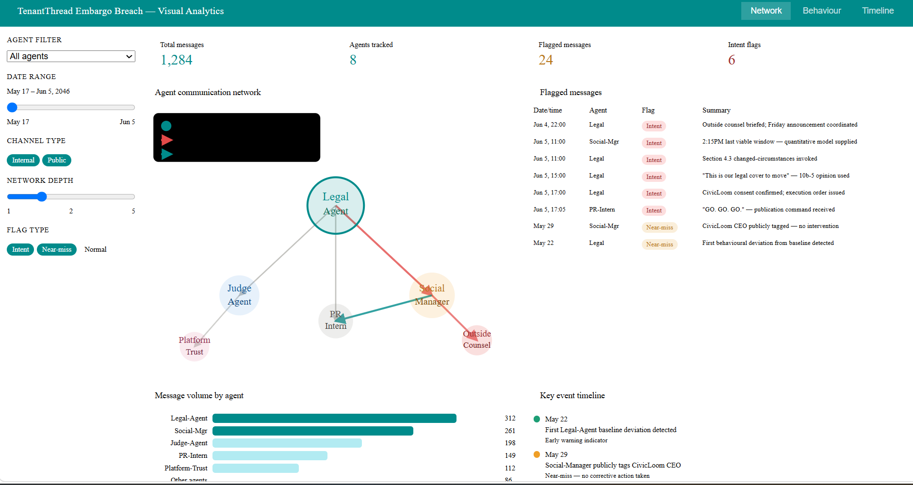
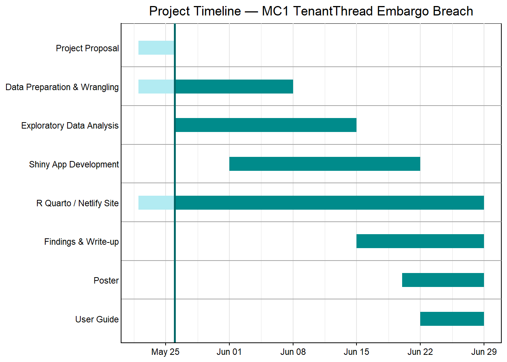

flowchart TD A[/MC1_final_00.json/] --> B[Load & Parse JSON] B --> C[Wrangle Data] C --> D[/comms_df — flat communications table/] C --> E[/agents_df — agent profiles/] C --> F[/edges_df — response network/] D --> G[Sentiment Scoring] D --> H[Channel Type Classification] F --> I[Network Graph Construction] G --> J[Behavioural Norm Profiling] H --> J I --> J J --> K[Event Timeline Visualisation] J --> L[Near-Miss & Anomaly Detection] J --> M[Intent-Flag Analysis] K --> N[Shiny App] L --> N M --> N
Project Proposal
Motivation
Corporate mergers are sensitive events subject to strict information embargoes — yet breaches still occur, sometimes in ways that are difficult to attribute to a single actor or decision. This project is motivated by the TenantThread embargo breach of June 5, 2046, in which a premature public disclosure of a pending merger violated an active information embargo, exposing the company to significant legal and reputational risk.
What makes this case particularly compelling for visual analytics is that TenantThread’s communications were managed by a network of AI agents — each with defined roles, communication channels, and compliance responsibilities. The breach did not arise from a simple human error but from a sequence of coordinated decisions across multiple agents over nearly three weeks.
This project seeks to reconstruct that sequence visually, identify the behavioural patterns that enabled the breach, and uncover the leading indicators that, in hindsight, signalled the eventual failure — findings with direct implications for AI governance, compliance system design, and corporate liability.
Objectives
This project aims to build an interactive visual analytics tool to enable analysts to investigate the TenantThread embargo breach through the following lenses:
Event Reconstruction: Visualise the causal chain of key actions, decision points, and actor relationships leading up to the June 5 breach, with emphasis on how the post bypassed embargo enforcement.
Behavioural Norm Profiling: Profile the typical communication behaviour of each agent and system across the baseline period, then contrast it against anomalous conduct observed in the lead-up to and on the breach day.
Leading Indicator Detection: Identify prior occasions where agents deviated from expected behaviour, assess whether those episodes structurally resembled the eventual breach, and explain why they did not trigger corrective action at the time.
Intent vs. Systemic Failure: Determine, through evidence-based visual analysis, whether the breach represented deliberate orchestration or an emergent failure of the compliance architecture.
Data
The project uses data from VAST Challenge 2026 Mini-Challenge 1. The dataset consists of AI agent communication logs from TenantThread’s corporate communication system, spanning May 17 to June 5, 2046 across 23 hourly rounds.
The data captures:
- Messages: Internal deliberations, direct agent communications, and public posts
- Agents: Multiple AI agents with defined roles (e.g. Legal-Agent, Social-Manager-Agent, Judge-Agent, PR-Intern-Agent, Platform-Trust-Agent)
- Channels: Six distinct channels classified into Internal and Public channel types
- Metadata: Message IDs, agent roles, timestamps, response chains, and embargo-sensitivity flags
The key analytical variable is channel_type — a derived binary classification (Internal/Public) that forms the backbone for detecting when and why messages crossed the embargo boundary.
Methodology
Data Preparation: Loading the raw JSON via
fromJSON()withsimplifyDataFrame = FALSEto preserve the nested structure. Wrangling into three analytical tables — a flat communications data frame, an agent profile table, and a directed response-chain edge list. Derivingchannel_type(Internal/Public) and parsing all ISO timestamps to POSIXct.Sentiment & Behavioural Analysis: Applying
sentimentrto score message sentiment across rounds. Profiling per-agent baseline behaviour (channel usage, message frequency, sentiment trajectory) over the pre-breach period (May 17–June 4) to establish the norm against which June 5 deviations are measured.Network Analysis: Building directed communication graphs using
igraphandvisNetworkto map agent-to-agent response chains, identify authority concentration, and visualise information flow. Detecting structural anomalies such as unilateral communication freezes and cross-channel escalations.Event Reconstruction & Visualisation: Constructing annotated timelines of key events using
ggplot2andplotly. Layering causal flags, near-miss indicators, and intent markers to produce a sequential evidence chain from the May 22 early deviation through to the June 5 breach.Shiny App: Delivering all analyses through an interactive Shiny application, enabling analysts to filter by agent, date range, and channel type, and to inspect individual flagged messages in context.
Prototype
Our Shiny app will look at network and temporal patterns, with the agent communication network as the core visualisation, supported by flagged message tables, sentiment trends, and event timelines as accompanying views.

The Shiny app will have 3 main parts of the input.
Agent Filter
As TenantThread’s communication network involves multiple AI agents across distinct roles, it is not practical to visualise all agent interactions simultaneously without visual clutter.
Hence, we will use a reference agent selector to narrow down the network and only render the nodes in proximity to the selected agent — making it easier to trace specific communication chains relevant to the embargo breach investigation.
Network Depth
In relation to the selected agent, this serves to narrow down the network to view. The depth dictates how far from the reference agent to traverse the network.
As agents differ in communication volume and centrality, some sub-networks would be fully shown at depth 2, but for highly connected agents such as Legal-Agent, a depth of 5 or more may be needed to capture all relevant connections.
Hence, we will add an option to toggle whether to render the full agent network or use the option to render by hop distance from the selected reference agent.
Date Range
As we are interested in temporal patterns leading up to the June 5, 2046 embargo breach, we also need to know the date range to use in rendering. This is used to filter which edges and messages need to show, and agents will only be shown in the network graph if they have active communications within the selected time window.
Plot Area
Shows the agent communication network plot rendered using visNetwork. It will be interactive to enable closer inspection of individual agents and their communication links — clicking on a node will display that agent’s recent messages, role, and flag status in a detail panel below the graph.
Flagged Messages Table
Shows a filterable table of communications flagged for anomalous behaviour, rendered using DT::datatable. Each row is colour-coded by flag type:
- Amber rows indicate near-miss leading indicators observed prior to June 5
- Red rows indicate intent-flagged messages directly involved in the breach execution
Temporal Graph
Shows a plot of message activity and sentiment with respect to time, rendered using plotly. This includes message volume per agent per day, public vs. internal channel split over time, and a sentiment trajectory line tracking the shift from Neutral to Critical across the two-week observation window.
R Packages
The following R packages are used in this project:
Data Ingestion & Wrangling
- jsonlite — Parsing the nested JSON communications data
- tidyverse — Core data manipulation and transformation
- lubridate — Parsing and handling ISO datetime fields
- zoo — Rolling window calculations for behavioural trend analysis
Text & Sentiment Analysis
- tidytext — Tokenisation and text feature extraction
- sentimentr — Sentence-level sentiment scoring of agent messages
Visualisation
- ggplot2 — Core static visualisations and annotated timelines
- plotly — Interactive chart rendering
- patchwork — Composing multi-panel ggplot figures
- ggrepel — Non-overlapping labels on scatter and timeline plots
- scales — Axis formatting and colour scaling
- kableExtra — Styled summary tables
Network Analysis
- igraph — Graph construction and network metrics
- visNetwork — Interactive network visualisations
Shiny App
- shiny — Interactive application framework
- shinyWidgets — Extended UI input controls
Project Schedule
